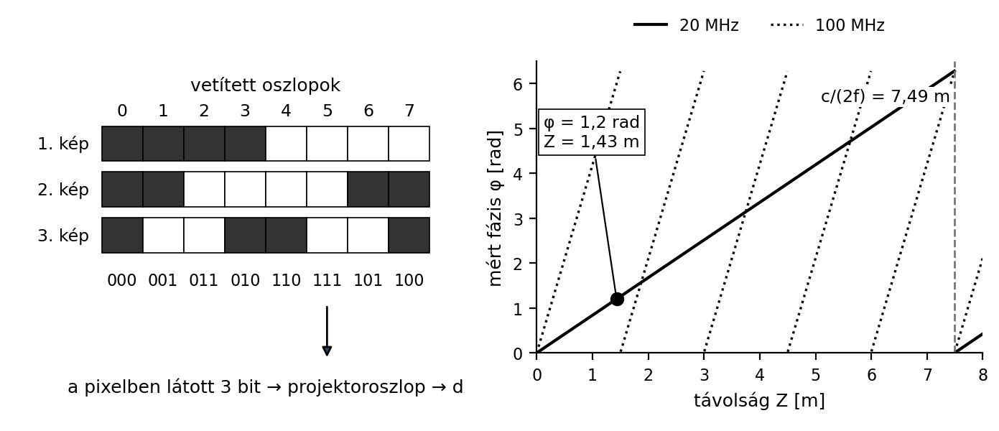

A Sztereóillesztés: blokkillesztés és SGM minden pixelhez diszparitást adott. Egy robotnak vagy egy mérőalkalmazásnak azonban nem kép kell, hanem térbeli adat: hol van az asztal, milyen irányba néz a doboz lapja, mennyit mozdult a kamera két felvétel között? A mélységképből pontfelhő készül, a pontfelhőből normálvektorok, két pontfelhőből pedig az ICP (iterative closest point) algoritmussal a köztük lévő mozgás. Végül megnézzük azokat a szenzorokat, amelyek a mélységet nem két passzív képből, hanem saját fénnyel mérik.
A mélységkép látszólag csak egy szürke kép, de a kalibrált kamerával minden pixele egy térbeli pont. Ha a pontokat más nézőpontból rajzoljuk ki, kiderül, mi látszott és mi maradt takarásban: a dobozok mögött „árnyék” alakú lyuk tátong az asztalon és a falon.
Az interaktív lapon a felhőt körbeforgathatod, mélységzajt adhatsz hozzá, és megnézheted, hogyan romlanak a normálvektorok.
Definíció. A mélységkép (depth map) pixelenként a koordinátát, vagyis az optikai tengely menti mélységet tárolja a kamera koordinátarendszerében. A pontfelhő (point cloud) 3D pontok halmaza, nálunk -as tömb.
A Lyukkamera-modell: belső és külső paraméterek visszavetítése pixelenként: Szavakban: a pixel sugarát a mélységig meghosszabbítjuk, majd ha kell, a kamera pózával a világba visszük. Sztereónál előbb (a rektifikált bal kamerában). A színes pontfelhő ugyanígy készül, a pixel színét a ponthoz csatoljuk.
Két gyakorlati részlet számít. Az első az érvénytelen
pixel: a takart, kitöltetlen vagy túl távoli hely értéke
nan; ezeket kihagyjuk, nem nullának vesszük (a
pont a kamerában lenne). A második a mélységfogalom. Sok szenzor nem
-t,
hanem a sugár menti távolságot ad:
Szavakban: a kép közepén a kettő
egyenlő, a szélén a sugár menti távolság nagyobb. A
stereo.depth_from_ray_distance ezt az átváltást végzi.
A mélységélek közelében egy szenzor (vagy egy interpoláló feldolgozás) az előtér és a háttér közé eső értéket is adhat. Ezek a repülő pixelek (flying pixels): a levegőben lebegő pontfátyol. A mélységugrásoknál érdemes szűrni őket.
A felület irányát a pont szomszédsága hordozza. Gyűjtsük össze a pixel -es környezetének pontjait (, súlypont ), és számoljuk ki a kovarianciamátrixot: Szavakban: megmondja, mely irányokban szóródnak a pontok. Ha a szomszédság síkdarab, a síkban nagy, a sík merőleges irányában kicsi a szórás. A normálvektor tehát legkisebb sajátértékéhez tartozó sajátvektora (ez a főkomponens-analízis, PCA; az SVD, rang, null-tér és a homogén legkisebb négyzetek homogén legkisebb négyzeteinek rokona). A arány a görbület, illetve a zaj mértéke.
A sajátvektor előjele tetszőleges, ezért a kamera felé fordítjuk: ha
,
akkor
,
ahol
a kamera középpontja (kamerakoordinátákban az origó). Mélységélnél a
szomszédságból ki kell hagyni a túl eltérő mélységű pontokat, különben a
két felület összekeveredik (stereo.estimate_normals,
küszöb: a középső mélység 3%-a). Rendezetlen pontfelhőnél a
rácsszomszédság helyett a
legközelebbi pontot használjuk (stereo.normals_knn).
Az ablakméret itt is kompromisszum: a nagy ablak kiátlagolja a zajt, de lekerekíti az éleket és a kis tárgyakat.
Két nézetből két pontfelhőnk van, mindegyik a saját kamerájában. Keressük azt a merev mozgást, amellyel a forrás és a cél pontjaira.
Adott
pontpárra minimalizáljuk a
összeget. Rögzített
mellett az optimális eltolás
.
Behelyettesítve, az
és
centrált pontokkal a maradékból csak a
függ
-től.
Ezt kell maximalizálni:
A
felbontással a maximum
Szavakban: a keresztkovariancia SVD-je
megadja a legjobb forgatást; a
tükrözés helyett forgatást kényszerít ki. Ez a
Kabsch-módszer, skálával kiegészítve az
Umeyama-illesztés [S-UMEYAMA] (geometry.kabsch,
geometry.umeyama); a legközelebbi forgatás ötlete a 3D forgatások és merevtest-transzformációk-ból
ismerős.
A párokat nem ismerjük, ezért váltogatunk [S-ICP]:
max_dist-nél távolabbiakat,
illetve csak a legközelebbi trim hányadot tartjuk meg (a
két nézet csak részben fed át);Elvetés nélkül egyik lépés sem növelheti a hibát: a Kabsch-lépés rögzített párokra minimalizál, az újrapárosítás pedig minden ponthoz a még közelebbit választja. A sorozat tehát konvergál, de csak egy helyi minimumhoz.
Sík felületen a legközelebbi pont szinte biztosan nem a valódi pár: a mintavételi rács máshová esik. A pont–pont költség ezt a csúszást is bünteti, ezért lassan halad. A pont–sík (point-to-plane) változat csak a cél normálisa menti eltérést méri: Kis forgatásra , és a maradék lineáris az ismeretlen -ben: Szavakban: iterációnként egy -os lineáris legkisebb négyzetes feladat (egy Gauss–Newton-lépés, lásd Nemlineáris legkisebb négyzetek: Gauss–Newton és Levenberg–Marquardt), utána . A síkok mentén szabadon csúszhat, ezért jóval gyorsabban konvergál.
Az ábra két tanulsága. Rossz kezdőértékből mindkét változat egy hamis megoldásban ragad: a doboz a szomszéd dobozra illeszkedik. A párok RMS-távolsága ekkor mm, alig több a helyes pózbeli mm-nél, a valódi hiba viszont cm: a kis maradék nem bizonyítja a helyességet. Jó kezdőérték származhat jellemzőpontokból, odometriából vagy az előző képkockából. A második veszély az elfajulás: ha a felhő egyetlen sík, a síkon belüli eltolás és a normális körüli forgatás nem látszik a pont–sík költségben (5. feladat).
A passzív sztereó a textúra nélküli falon bizonytalan. Az aktív szenzor saját fényt bocsát ki.

A strukturált fény (structured light) egy projektort és egy kamerát használ. A projektor „fordított kamera”: ha kiderül, melyik projektoroszlop világítja meg a kamerapixelt, a pixel sugara és a vetített fénysík metszése megadja a pontot (Trianguláció); rektifikált elrendezésben ugyanaz a . Az azonosítás kódolt mintákkal történik: Gray-kóddal felvétel oszlopot különböztet meg, és a szomszédos oszlopok csak egy bitben térnek el (a határon legfeljebb egy oszlopot tévedünk); fázistolt szinuszmintákkal tört oszlop is mérhető; egyetlen álvéletlen pontmintával mozgó jelenet is, kisebb felbontással. Hibaforrás: erős napfény, tükröző vagy sötét felület, a projektor és a kamera közti takarás, a minták közötti mozgás.
A repülésiidő-kamera (time of flight) a fény útjának idejét méri: . A közvetett (folytonos hullámú) ToF frekvenciával modulált fényt küld, és a visszaérkező jel fáziskésését méri: A fázist tipikusan négy, negyedperiódusonként eltolt korrelációs mintából () kapjuk: (az előjel- és sorrendkonvenció szenzorfüggő). Mivel a fázis szerint periodikus, a mérés többértelmű: az egyértelmű tartomány , 20 MHz-en m, 100 MHz-en m. A magasabb frekvencia pontosabb, ezért a szenzorok több frekvenciát kombinálnak. Hibaforrások: többutas visszaverődés (sarkokban a mért távolság hosszabb), repülő pixelek, gyenge jel sötét felületen, más fényforrások zavarása.
A lidar többnyire rövid lézerimpulzus idejét méri (közvetlen ToF): ns késés cm távolságkülönbség, tehát pontos időmérés kell. Pásztázó vagy tömbös kivitelben készül; nagy hatótávú és kis relatív hibájú, de a pontfelhő a kamerához képest ritka. Gondot okoz az eső, a köd, az üveg, a tükör és a mozgás pásztázás közben.
| Szenzor | Erőssége | Tipikus gyengéje |
|---|---|---|
| passzív sztereó | olcsó, kültéren is | textúra nélküli, ismétlődő felület; |
| strukturált fény | sűrű, közelre pontos | napfény, tükröző felület, mozgás |
| ToF-kamera | kompakt, képsebességű | többutas visszaverődés, többértelműség |
| lidar | nagy hatótáv, pontos | ritka, drágább, esőre, üvegre érzékeny |
Sok mélységkép egyesítéséhez a teret kis kockákra (voxelekre) osztjuk, és mindegyikben tároljuk a legközelebbi felülettől mért előjeles, levágott távolságot (truncated signed distance function, TSDF): a felület előtt pozitív, mögötte negatív. Minden új képkockát (ICP-vel a modellhez igazítva) súlyozott átlagként olvasztunk be, így a zaj kiátlagolódik, a felület pedig a nulla szintfelület. A módszer a valós idejű, mélységkamerás rekonstrukció alapja (ellenőrizendő: KinectFusion, 2011).
Pixelből pont. , , a pixel mélysége m. , tehát és m.
Normálvektor. Négy szomszéd a súlypont körül: (azonos előjellel) és , a súlypont . Ekkor A 0 sajátértékhez az és komponensre , azaz : . Az előjel jó, mert a kamera (origó) felé mutat. Ez a sík normálisa.
Egy ICP-lépés 2D-ben. Célpontok: , , ; forráspontok: , , . A legközelebbi pontok épp a sorrend szerinti párok. Súlypontok: , . Síkban a forgatás szöge majd . Mivel a párok jók voltak, egy lépés pontosan visszaállítja a célt.
ToF. MHz, rad: m.
import numpy as np
from visionkit import camera, geometry, scene, stereo
K = camera.intrinsics(250, 250, 159.5, 119.5)
X = camera.backproject(np.array([[259.5, 169.5]]), [1.0], K, np.eye(3), np.zeros(3))[0]
print("X_c =", X.round(4), " rho =", round(float(np.linalg.norm(X)), 4))
nb = np.array([[0.1, 0, 1.05], [-0.1, 0, 0.95], [0, 0.1, 1.0], [0, -0.1, 1.0]])
d = nb - nb.mean(0)
vals, vecs = np.linalg.eigh(d.T @ d / len(d))
n = vecs[:, 0] * (-np.sign(vecs[:, 0] @ nb.mean(0))) # a kamera felé
n[np.abs(n) < 1e-12] = 0.0
print("sajátértékek:", vals.round(5), " n =", n.round(4))
q = np.array([[0, 0], [2, 0], [0, 1.0]])
p = np.array([[0.2, 0.1], [2.12, 0.66], [-0.08, 1.06]])
nearest = stereo.nearest_neighbors(p, q)[1]
R2, t2 = geometry.kabsch(p, q[nearest])
print("párok:", nearest.tolist(), f" szög = {np.degrees(np.arctan2(R2[1, 0], R2[0, 0])):.2f}°",
" t =", t2.round(4))
print(f"ToF: Z = {299792458 * 1.2 / (4 * np.pi * 20e6):.4f} m")X_c = [0.4 0.2 1. ] rho = 1.0954
sajátértékek: [0. 0.005 0.00625] n = [ 0.4472 0. -0.8944]
párok: [0, 1, 2] szög = -16.26° t = [-0.22 -0.04]
ToF: Z = 1.4314 mMost a Sztereóillesztés: blokkillesztés és SGM eredményéből készítünk pontfelhőt, és a mélység hibáját távolságsávonként mérjük:
size = (240, 320)
sp = scene.stereo_pair(size=size, color=False)
disp = stereo.match(sp["left"], sp["right"], 64)["disparity"]
Z = stereo.disparity_to_depth(disp, sp["K"][0, 0], sp["baseline"])
cloud = stereo.depth_to_points(Z, sp["K"], *sp["pose_left"], mask=sp["valid"])
table = (sp["ids"] == 1) & sp["valid"] & np.isfinite(Z)
Zw = stereo.depth_to_points(Z, sp["K"], *sp["pose_left"], mask=table)[:, 2]
h = 1000 * Zw # asztallap: világ Z = 0 [mm]
print(f"{len(cloud)} pont; asztalmagasság: medián {np.median(h):+.1f} mm, "
f"90%: |h| < {np.percentile(np.abs(h), 90):.1f} mm")
err = np.abs(Z - sp["depth"])
ok = sp["valid"] & (np.abs(disp - sp["disparity"]) < 1)
for lo, hi in ((0.6, 1.0), (1.0, 1.4), (1.4, 1.8)):
m = ok & (sp["depth"] >= lo) & (sp["depth"] < hi)
zm = np.median(sp["depth"][m])
pred = stereo.depth_uncertainty(zm, 250, 0.08, np.median(np.abs(disp - sp["disparity"])[m]))
print(f"Z {lo}-{hi} m: medián mélységhiba {1000 * np.median(err[m]):5.2f} mm, "
f"Z²Δd/(fb) = {1000 * pred:5.2f} mm")72385 pont; asztalmagasság: medián +0.0 mm, 90%: |h| < 8.5 mm
Z 0.6-1.0 m: medián mélységhiba 4.18 mm, Z²Δd/(fb) = 4.24 mm
Z 1.0-1.4 m: medián mélységhiba 7.61 mm, Z²Δd/(fb) = 7.97 mm
Z 1.4-1.8 m: medián mélységhiba 13.28 mm, Z²Δd/(fb) = 13.20 mmA mért hiba a becslést követi: a távoli sávban a pontok kb. háromszor bizonytalanabbak.
r = scene.render(*scene.default_pose(), size=(120, 160), ss=1, color=False)
K1 = r["K"]
gt = r["normals"] @ r["R"].T
noise = np.random.default_rng(0).standard_normal(r["depth"].shape)
for sigma in (0.0, 0.002, 0.005):
Zn = r["depth"] + sigma * r["depth"] ** 2 * noise
row = [f"σ(1 m) = {1000 * sigma:.0f} mm:"]
for w in (3, 5, 9, 13):
N = stereo.estimate_normals(stereo.depth_to_pointmap(Zn, K1), window=w)
m = np.isfinite(N[..., 0]) & (r["depth"] < 2.0)
a = np.degrees(np.arccos(np.clip(np.sum(N[m] * gt[m], axis=1), -1, 1)))
row.append(f"w={w}: {np.median(a):5.2f}°")
print(" ".join(row))σ(1 m) = 0 mm: w=3: 0.00° w=5: 0.00° w=9: 0.00° w=13: 0.00°
σ(1 m) = 2 mm: w=3: 8.45° w=5: 3.19° w=9: 1.20° w=13: 0.78°
σ(1 m) = 5 mm: w=3: 28.88° w=5: 11.09° w=9: 3.68° w=13: 2.92°Zajmentes adaton a kis ablak már pontos; mm-es zajnál a -as ablak mediánhibája még több fok, a -as viszont egy fok alatti. A medián persze elfedi, hogy a nagy ablak az élek közelében rosszabb.
K2 = scene.default_K(size)
pa, pb = scene.orbit_pose(-20), scene.orbit_pose(0)
ra, rb = (scene.render(*p_, size=size, color=False) for p_ in (pa, pb))
PA, PB = (stereo.depth_to_pointmap(r_["depth"], K2) for r_ in (ra, rb))
NB = stereo.estimate_normals(PB)
S = PA[ra["depth"] < 2.0][::16]
mb = np.isfinite(NB[..., 0]) & (rb["depth"] < 2.0)
T, N = PB[mb], NB[mb]
Rt, tt = camera.relative_pose(*pa, *pb)
axis = np.array([0.2, -1.0, 0.3]) / np.linalg.norm([0.2, -1.0, 0.3])
dR = camera.rodrigues(np.radians(15) * axis)
centre = S.mean(0) @ Rt.T + tt
shift = 0.08 * np.array([1.0, -0.5, 0.8]) / np.linalg.norm([1.0, -0.5, 0.8])
R0, t0 = dR @ Rt, dR @ (tt - centre) + centre + shift
def pose_error(R, t):
return 1000 * np.linalg.norm(S @ R.T + t - (S @ Rt.T + tt), axis=1).mean()
print(f"{len(S)} forrás-, {len(T)} célpont; kezdőhiba {pose_error(R0, t0):.1f} mm")
for method, iters in (("plane", 40), ("point", 200)):
o = stereo.icp(S, T, method, N, max_iter=iters, max_dist=0.1, trim=0.9, R0=R0, t0=t0)
print(f"{method}: {o['n_iter']:3d} iteráció, konvergált: {o['converged']}, forgáshiba "
f"{np.degrees(camera.rotation_angle(o['R'], Rt)):.3f}°, hiba "
f"{pose_error(o['R'], o['t']):.2f} mm")4491 forrás-, 76539 célpont; kezdőhiba 157.4 mm
plane: 9 iteráció, konvergált: True, forgáshiba 0.001°, hiba 0.02 mm
point: 200 iteráció, konvergált: False, forgáshiba 0.073°, hiba 15.24 mmA pont–sík ICP kilenc lépésben század-milliméterre jut; a pont–pont 200 lépés után is centiméteres nagyságrendben téved, pedig a hibája még csökken.
Továbbvitt eredmény. A mélységkép pontfelhővé
alakítása (stereo.depth_to_points) és a merev illesztés
(geometry.kabsch, stereo.icp) a Vizuális odometria ízelítő, a Mélységbecslés hálóval és a 3D Gaussian splatting ízelítő eszköze; az aktív
szenzorok (és a hibáik) adják a mélységbecslő hálók alapigazságát a Mélységbecslés hálóval és az Adatkészletek, annotáció és eloszláseltolódás
témáiban.
depth_from_ray_distance.nan
és maszk; a mélységélek repülő pixeleinek szűrése.max_dist és trim; ellenőrzés független
információval, nem csak a maradékkal.A mélységképből a pontfelhő
;
az érvénytelen pixeleket kihagyjuk, és megkülönböztetjük a
mélységet a sugár menti távolságtól. A normálvektor a szomszédság
kovarianciájának legkisebb sajátvektora, a kamera felé fordítva. Az ICP
felváltva párosít legközelebbi pontokat, és zárt alakú
Kabsch/Umeyama-lépést tesz; a pont–sík változat jóval gyorsabb, de
mindkettő jó kezdőértéket igényel, és sík jeleneten elfajulhat. Aktív
szenzor: strukturált fény (háromszögelés), ToF (fázis,
többértelműség), lidar (impulzusidő); a TSDF sok mélységképet egyesít. A
kis ICP-maradék nem bizonyítja a helyességet, ezért az eredményt
független adattal ellenőrizzük. A stereo.depth_to_points, a
geometry.kabsch és a stereo.icp az odometria,
a mélységbecslés és a 3D megjelenítés eszköze; az aktív szenzorok a
tanult mélységbecslés alapigazság-forrásai.
1. , hossza , tehát m. A -t -nek véve -ot tévednél.
2. m. A m-es felület fázisa egy teljes körrel túlfordul, a mért érték m.
3. , ebből , vagyis .
4.
for angle in range(-60, 61, 20):
dY = camera.rodrigues([0, -np.radians(angle), 0])
o = stereo.icp(S, T, "plane", N, max_iter=40, max_dist=0.1, trim=0.9,
R0=dY @ Rt, t0=dY @ (tt - centre) + centre)
print(f"{angle:4d}°: {o['n_iter']:2d} iteráció, hiba {pose_error(o['R'], o['t']):7.2f} mm") -60°: 40 iteráció, hiba 426.43 mm
-40°: 8 iteráció, hiba 0.02 mm
-20°: 6 iteráció, hiba 0.02 mm
0°: 2 iteráció, hiba 0.02 mm
20°: 5 iteráció, hiba 0.02 mm
40°: 7 iteráció, hiba 0.02 mm
60°: 19 iteráció, hiba 481.24 mmEzen a párban a tartomány körülbelül ; -ról hamis helyre jut. A határ a jelenettől és a párosítási küszöbtől függ.
5.
table = (rb["ids"] == 1) & mb
Pt, Nt = PB[table], rb["normals"][table] @ rb["R"].T # alapigazság-normálisok
Pc = Pt - Pt.mean(0)
s = np.linalg.svd(np.hstack([np.cross(Pc, Nt), Nt]), compute_uv=False)
print("szinguláris értékek:", " ".join(f"{x:.3g}" for x in s))szinguláris értékek: 136 53.7 30.1 5.97e-14 6.68e-15 1.92e-31Három szinguláris érték gyakorlatilag nulla: a két síkbeli eltolás és a sík normálisa körüli forgatás nem változtatja a pont–sík maradékot. Valós, zajos normálisoknál ezek nem pontosan nullák, de nagyon kicsik, és a megoldás ezekben az irányokban zajt követ.